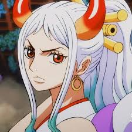
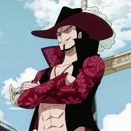

Reason: Shanks is one of the strongest characters in One piece, yet he's full of mysteries. No one knows
what he is truly capable of in a serious fight. Also, he is a kind and loyal captain to his crew.

Yamato
Reason: Yamato is the daughter of one of the four Emperors of the sea. She is already strong as it is, but
what I like the most about her is that she was a fierce warrior in her fights and her goal was to protect
the people of
Wano.

Mihawk
Reason: Just like shanks Dracule Mihawk is an extremely powerful, but mysterious character. He does hold the
title "The World's Strongest Swordsman". He also seems to have a rivalry with Shanks.